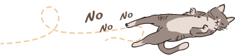
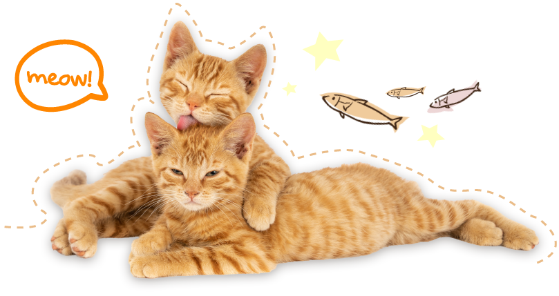
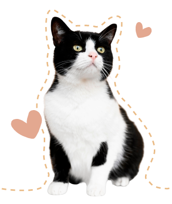
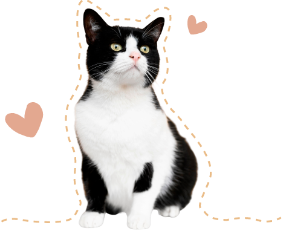
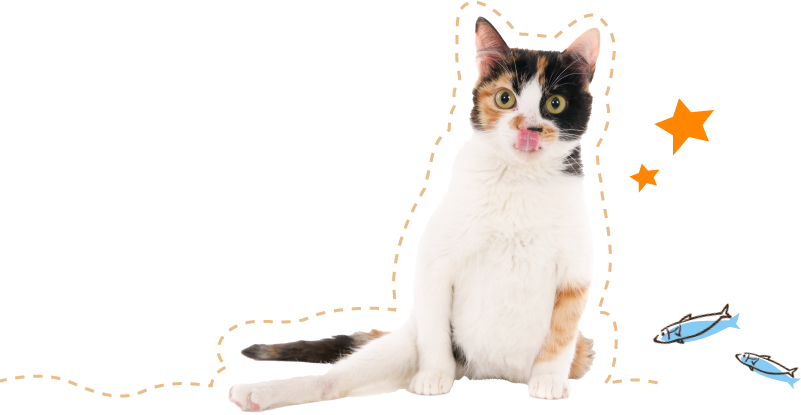
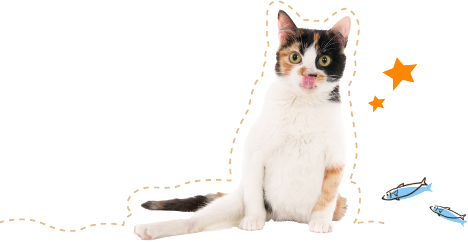
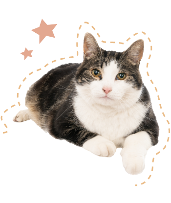
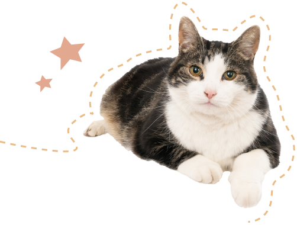

貓咪
健康幸福守則
Rules for Cat Health and Happiness

Rule 01
迎接貓咪前準備
恭喜您！
即將迎接一隻可愛貓貓成為新的家人！
在牠們可愛的小爪子踏進家門之前，
請先確認自己是否備妥貓咪所需的物品。

Rule 02
打造一個安全舒適的家
您需要準備三個主要的活動區域，每一個活動區域都需要被隔開，最好分別位於不同的房間。

喝水和吃飯的區域
貓咪需要一個安靜的環境，好讓牠們在吃飯的時候不會被打擾或受到驚嚇。

睡覺和休息的區域
貓咪需要非常大量的睡眠，請提供一個放鬆、遠離吵雜動線的環境，讓牠們可以放心休息。

上廁所的區域
上廁所其實是一件會讓牠們感到脆弱的事情。最好將牠們的便盆分開擺放，並具備隱蔽性。

Rule 03
遠離危險的地方

01
有毒的室內植物
有一些室內植物 (如：百合花) 對於貓咪而言是有毒的。請獸醫師提供完整的有毒植物清單，並建議您在將貓咪接回家前搬走這些植物。

02
馬桶和垃圾桶
為了避免貓咪調皮掉進馬桶或垃圾桶裡，記得一定要蓋上蓋子。
另外還要把線繩收好，不要讓貓咪玩，以免被纏繞或吞食。

03
藥物、噴劑等危險物質
務必將藥品、清潔用品及其他有毒物質存放在安全之處。
有些犬用跳蚤治劑對貓來說非常危險，尤其是防凍劑特別致命。

04
藏身地點
貓咪喜歡躲在滾筒洗衣機和各式家具下的隱蔽之處。
找到他們可能躲藏的地方並擋起來，多留心以確保牠們不會被困住。

05
電線和插座
為了不讓貓咪咬電線或被電線纏住，請用保護蓋將電線蓋住，綁好電線。
另外也提醒您要用保護蓋蓋住插座以免危險。


06
對貓咪有毒的食物
有的食物對人類來說無害，但對貓咪來說是毒藥。
輕則引起消化方面的問題，嚴重則導致死亡。
因此請將所有食物放在貓咪碰不到的地方，並讓所有家人知道。

07
小型物品或玩具
請收好任何小型物品，例如鈕扣或兒童玩具，以防貓咪不慎誤吞。
另外請注意不要將塑膠袋或泡棉物體放在幼貓身邊，以防他們吞咬導致窒息。

-

Rule 04
照顧愛貓的健康
-
幼貓
1.適當飲食：提供高品質食物。
2.社交化訓練：培養友善和信任感。
3.定期獸醫檢查：確保健康狀態。 -


青少年貓
1.適當的飲食：提供青少年貓專用食物。
2.積極的運動和遊戲：促進身體發展和鍛煉。
3.定期獸醫檢查和疫苗接種：預防常見疾病。 -
 

成貓
1.健康飲食：提供平衡的貓糧。
2.定期獸醫檢查：監測健康狀態。
3.適當運動和遊戲：維持體重和心理健康。 -


熟齡貓
1.適當的飲食：根據年齡和健康調整飲食。
2.定期獸醫檢查和健康監測：關注任何變化。
3.舒適的休息和睡眠環境：提供良好休息區。